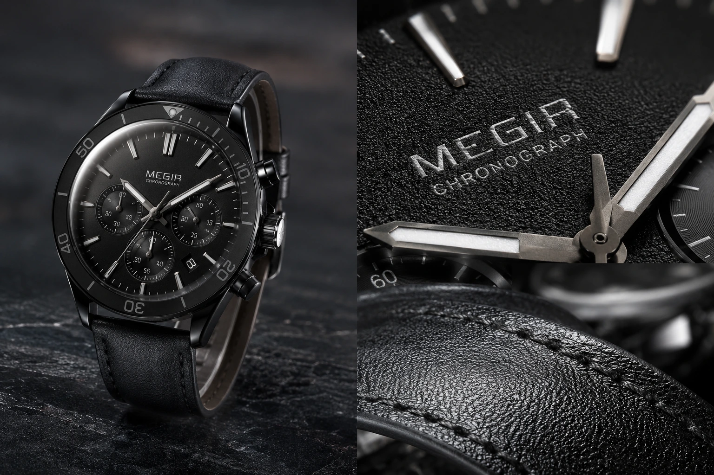
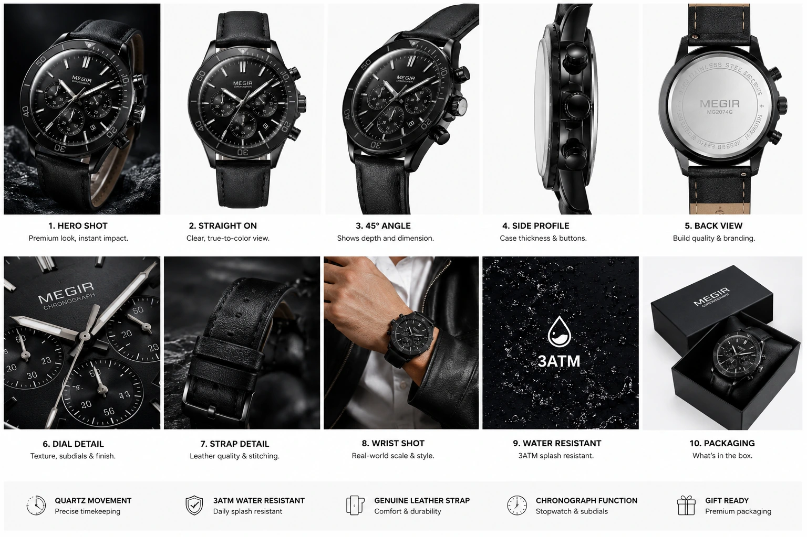

How High-Definition Close-Up Product Photos Save Abandoned Carts
The Real Reason Buyers Abandon Carts
The e-commerce industry attributes cart abandonment to many causes — unexpected shipping costs, a forced account creation, a slow checkout page, a payment method not accepted. All of these are real. But there is a cause that sits upstream of all of them, that accounts for a significant portion of abandoned carts across every product category, and that is almost entirely addressable through visual production: the buyer did not feel confident enough in what the product actually looked like to commit to purchasing it.
This is visual uncertainty abandonment — and it is the most commercially significant form of cart abandonment for e-commerce product photography to address. A buyer who adds a product to their cart has demonstrated purchase intent. They are interested. They are close. What stops them from completing the purchase is not the checkout flow — it is the moment they pause on the product page, look at the images again, realise they cannot clearly see the stitching, the finish, the texture, the scale, and decide the uncertainty is not worth the risk of a purchase they might have to return.
High-definition close-up product photography — specifically macro product photography, high-resolution textures in e-commerce imagery, and strategically sequenced Shopify product gallery design — addresses this uncertainty directly, at the exact moment in the buyer journey where it costs the most.
What Visual Uncertainty Looks Like in the Buyer's Brain
Understanding the mechanism of visual uncertainty abandonment requires understanding what a buyer is actually doing when they examine a product page. They are not passively viewing images — they are conducting a visual inspection. They are trying to answer specific questions about the product that the description alone cannot answer: Is this fabric actually as soft as it looks? Is this stitching quality or will it come apart? Is this hardware plastic or metal? Is this the right shade of blue or will it look different in real life? Is this actually as big as it looks in the image?
When the product gallery does not answer these questions — when the images are all shot at the same distance, the same angle, the same level of detail — the buyer's brain generates unresolved questions. Unresolved questions generate hesitation. Hesitation generates exit. Conversion rate optimization visuals work by systematically anticipating these questions and answering them through images before they become reasons to abandon the purchase.
Material and Texture Questions
Is this leather genuine? Is this cotton fine or coarse? Is this finish matte or has it got a sheen? Answered by high-resolution texture close-ups that show material quality at a level that description cannot communicate.
Construction Quality Questions
Is the stitching clean? Are the joints tight? Is the hardware solid? Answered by macro product photography that reveals the craftsmanship details invisible in standard product shots.
Colour Accuracy Questions
Will this look the same in real life? Is this the right shade? Answered by images shot under multiple lighting conditions and with a colour-calibrated camera and monitor workflow in post-production.
Scale and Proportion Questions
How big is this actually? Will it fit? Answered by scale reference images showing the product alongside a familiar object or on a human body, with dimensional annotations where relevant.

Macro Product Photography: The Technical Discipline of Trust
Macro product photography is the discipline of photographing products at extreme proximity — close enough that details invisible to the naked eye at normal viewing distance are revealed with clarity. A macro image of a handwoven saree shows individual warp and weft threads. A macro image of a leather bag shows the grain pattern and the stitching needle holes alongside each thread. A macro image of a piece of jewellery shows the prong setting, the stone facets, and the metalwork finish at a level of detail that no product description can match.
For Indian e-commerce brands in the categories where craftsmanship and material quality are primary purchase drivers — textiles, jewellery, leather goods, handcrafted home goods — macro product photography is not a premium add-on to a standard catalog shoot. It is the image that justifies the price point, communicates the craft, and closes the sale for the buyer who is genuinely evaluating quality rather than just browsing.
The technical requirements of professional macro product photography:
- Macro lens or extension tubes. Achieving true macro magnification — 1:1 or greater — requires either a dedicated macro lens (typically 90mm or 100mm for product photography to maintain working distance) or extension tubes fitted to a standard lens. Smartphone macro modes, digital zoom, and crop-based close-ups do not produce the resolution or the subject separation of true optical macro photography.
- Depth of field management. At macro distances, depth of field becomes extremely shallow — a millimetre of focus shift can move the critical detail out of the sharpness plane. For products where front-to-back sharpness across the detail area is required — a full view of a stitching run, the complete surface of a stone setting — focus stacking is used: multiple frames shot at incrementally different focus distances, composited in post-production into a single image with full front-to-back sharpness.
- Controlled, diffused lighting. At macro distances, lighting becomes critical — any specular highlight or shadow becomes dramatically visible at the scale of the image. Professional macro product lighting uses ring flash, macro softboxes, or diffused LED panels positioned to eliminate hot spots and reveal texture through side or raking light that shows surface dimension without creating blown highlights.
- Vibration elimination. At macro magnification, any vibration — from the camera mirror, from air movement, from the table surface — produces blur that destroys the resolution advantage of macro photography. Professional macro shoots use mirror lockup or electronic shutter, a remote trigger or timer, and a heavy stable surface to eliminate all vibration sources.
High-Resolution Textures in E-commerce: The Quality Communication Layer
High-resolution textures in e-commerce serve a specific commercial function that sits between the hero image and the macro detail shot: they show the surface character of the material at a scale that communicates quality without necessarily revealing construction detail. A high-resolution texture image of a cotton fabric shows the weave density and thread quality. A high-resolution texture image of a ceramic bowl shows the glaze depth and surface variation. A high-resolution texture image of a leather wallet shows the grain pattern and the hand-finishing.
These images do something that product copy cannot: they allow the buyer to make a tactile judgment from a visual input. The brain maps visual texture information to haptic memory — looking at a high-resolution image of a tightly woven silk fabric activates the same neural pathways that touching that fabric would. This is the mechanism by which high-resolution textures in e-commerce reduce purchase hesitation — they give the buyer a simulated tactile experience before the physical one.
For Indian retail categories where texture is a primary quality indicator — Kanjivaram silk, handblock-printed cotton, leather goods, brass and copper home goods, terracotta and handmade ceramics — high-resolution textures in e-commerce images are not decorative extras. They are the product trust signals that justify the price premium that handcrafted and premium materials command over machine-produced equivalents.
Shopify Product Gallery Design: The Sequence That Converts
Shopify product gallery design — the order, selection, and composition of images in the product page gallery — is as important as the quality of the individual images within it. A product page with six excellent images arranged in the wrong sequence will convert at a lower rate than one with the same images arranged to follow the buyer's visual inspection journey from awareness to confidence to conversion.
The optimal image sequence for a Shopify product gallery designed to maximise conversion and minimise reducing shopping cart abandonment:
- Image 1 — The hero. White background or clean minimal background. Product fills 85% of the frame. Perfect technical execution — no shadows, no background imperfections, correct colour calibration. This is the thumbnail image that earns the click from the product listing page. Its job is clarity and appeal, not detail.
- Image 2 — The key alternative angle. The second-most-important view of the product — the back of a garment, the side profile of a shoe, the interior of a bag, the underside of a piece of furniture. This image answers the buyer's first "but what does it look like from..." question before they ask it.
- Image 3 — The first detail close-up. The product detail that most directly communicates quality for this specific product category: the stitching on a leather good, the weave on a textile, the stone setting on jewellery, the joint on a furniture piece. This is where macro product photography earns its conversion value — this image resolves the construction quality question.
- Image 4 — The texture or material close-up. A high-resolution textures in e-commerce image showing the surface character of the primary material. This resolves the tactile quality question — the simulation of touch that reduces the hesitation of buying without physical examination.
- Image 5 — The lifestyle or in-use image. The product in context — worn, placed, used — that communicates scale, proportion, and the aspirational dimension of owning and using the product. This image does not answer a question; it creates desire. It makes the buyer want to be the person in the image.
- Image 6 — The scale or dimension reference. A clear visual scale reference — the product held by a hand, placed next to a familiar object, or annotated with dimensions — that resolves the size question before it generates a return. This is the most commercially practical image in the gallery and the most frequently missing.

Product Trust Signals: The Visual Language of Credibility
Product trust signals in e-commerce photography are the specific visual elements that communicate, without words, that this product is what it claims to be, made from the materials it claims to use, at the quality level its price implies. They are the visual equivalent of a shopkeeper showing you the back of the garment, letting you feel the weight of the item, or pointing out a detail of construction that distinguishes their product from a cheaper alternative.
The specific product trust signals that high-definition close-up photography communicates for each major Indian retail category:
Textiles and Sarees
- Zari thread count and uniformity visible in macro
- Warp and weft density communicating weave quality
- Pallu border pattern clarity and colour accuracy
- Fabric weight visible through drape in lifestyle images
Jewellery and Accessories
- Stone clarity and setting precision visible in macro
- Metal finish and hallmarking detail
- Clasp mechanism quality and construction
- Weight and proportion visible through scale reference
Leather Goods and Footwear
- Grain pattern confirming genuine leather in texture shot
- Stitching regularity and thread quality in macro
- Sole construction and attachment method visible
- Hardware finish and weight communicated through close-up
High-Intent Product Frames: Photography at the Conversion Moment
High-intent product frames are images specifically designed and produced for the buyer who is at the highest point of purchase intent — who has found the product, is on the product page, has potentially added to cart, and is making their final evaluation before committing to the purchase. These are the images that resolve the last hesitations and close the sale.
The characteristics that define a high-intent product frame:
- It answers a specific question, not a general one. Not "here is the product from another angle" but "here is the exact element of the product that a buyer who is almost committed but not yet convinced needs to see clearly." The best high-intent product frames are designed by thinking through the objections a buyer might have at the moment of almost-purchase, and producing an image that visually resolves each one.
- It is shot at the correct magnification for its purpose. A high-intent frame showing construction quality needs macro magnification. A high-intent frame showing scale needs a wide enough composition to include a reference object. A high-intent frame showing colour accuracy needs to be shot and calibrated specifically for colour fidelity rather than for aesthetic appeal.
- It is positioned correctly in the gallery sequence. High-intent frames belong in positions three through six of the gallery — after the hero and the alternative angle have established the product, and before the lifestyle image creates desire. A high-intent frame as the first gallery image is a missed hook. A lifestyle image in position three, before the construction detail, leaves the construction quality question unanswered at the moment the buyer is looking for the answer.
Building Brand Visibility with Visuals: The Long-Term Compounding Effect
Building brand visibility with visuals through high-definition close-up product photography delivers a commercial benefit that goes beyond individual product page conversion rates. Every high-quality, detail-rich product image shared to Instagram, pinned to Pinterest, featured in a Google Shopping result, or embedded in an email campaign is an extension of the brand's visual identity into a new context — and the consistency and quality of that visual identity across every context is what builds brand recognition and brand trust over time.
For Indian e-commerce brands investing in e-commerce product photography at the level of macro detail and high-resolution texture work, the images serve multiple commercial functions simultaneously: they convert on the product page, they perform in social media content, they earn saves and shares on Instagram, they rank in Google Image Search, and they build the visual identity that makes the brand's products instantly recognisable across every touchpoint where a potential buyer encounters them.
This compounding effect — where the same high-quality image serves conversion, social, SEO, and brand identity functions simultaneously — is the ROI case for investing in professional e-commerce product photography at the level of detail that most Indian brands are not yet producing. It is not one investment for one outcome. It is one investment for five simultaneous commercial functions, each of which compounds with every new image added to the library.
The Technical Delivery Checklist for High-Definition Product Images
Before any high-definition close-up product image is uploaded to Shopify or a marketplace listing, confirm this technical checklist:
- Resolution: Minimum 2000 × 2000 pixels for product gallery images. Macro and detail images should be delivered at the highest resolution the camera can produce — typically 4000 × 4000 pixels or higher — so that Shopify's zoom function delivers genuine detail rather than pixelated enlargement.
- File format: WebP for all web-optimised delivery versions. Retain original TIFF or high-quality JPEG masters for print and future use.
- File size: Detail and macro images: under 200KB at display resolution. Full-resolution zoom versions: under 500KB. Images above these targets will cause the zoom function to load slowly on mobile connections — destroying the conversion value of the detail the image was produced to communicate.
- Colour profile: sRGB for all web delivery. CMYK profiles cause colour shift in browser rendering that misrepresents the product's actual colour.
- Alt text: Every detail image requires a specific alt text that describes what the image shows: "Close-up of hand-stitched leather welt on brown Oxford shoe" not "product detail." Alt text on detail images earns Google Image Search visibility for the specific quality terms buyers use when searching for premium products.
Conclusion
Shopping cart abandonment driven by visual uncertainty is the most addressable conversion problem in e-commerce — and macro product photography, high-resolution textures in e-commerce imagery, strategically sequenced Shopify product gallery design, and intentionally produced high-intent product frames are the visual production investments that address it directly.
Every buyer who abandons a cart because they cannot see the construction quality, the texture, the scale, or the colour accuracy of a product is a buyer who would have converted if the product page had answered their visual question before they had to ask it. Conversion rate optimization visuals built around high-definition close-up photography answer those questions — and the buyers who get answers complete their purchases.
At The PhD Ads, we specialise in e-commerce product photography at every level of detail — from hero catalog images and macro close-up photography to complete Shopify product gallery design strategy and technically optimised delivery across all platforms, built for Indian brands serious about reducing cart abandonment and improving conversion at scale.
Key Topics
Ready to Build a Product Gallery That Converts?
At The PhD Ads, we produce high-definition e-commerce product photography — macro detail shots, high-resolution texture images, and complete Shopify product gallery design — built to eliminate visual uncertainty, reduce cart abandonment, and improve conversion rates for Indian e-commerce brands.
Email: team@e2o.in